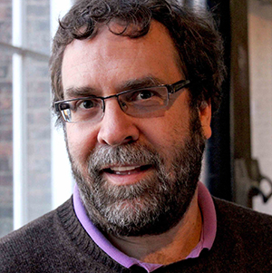
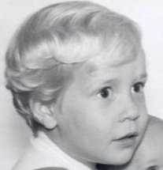

Nicholas Horton for ASA President
The American Statistical Association serves members in a world dependent on data. Statistics plays a critical role in science, policy, business, and public life. The growing role of data science and the rapid dissemination of sophisticated AI tools and models are both threats and opportunities for us as a profession.
As President, I would work to strengthen the ASA as a visible, influential, and inclusive professional home for statisticians, data scientists, analysts, and others across academia, industry, and government.
Improving Statistics and Data Science Education
Education is central to the vitality of our discipline and is at the core of my work as a statistician. I have committed much of my career to strengthening statistics and data science education, most recently chairing the recent National Academies consensus study on K-12 data and computing competencies, serving as editor of the ASA’s open-access Journal of Statistics and Data Science Education, and leading the ASA’s efforts to revise the “Guidelines for Undergraduate Academic Programs in Statistics”.
We need to double down on these and similar efforts to ensure that statistics remains a vibrant and attractive choice for the next generation of students. And we need to ensure that statisticians in industry and government have access to high-quality education and training opportunities to keep pace with the rapidly evolving field.
But technical skill without an ethical foundation is not enough. The next generations of statisticians and data scientists must be responsible stewards of data.
To make this happen, I would:
- Support and expand the ASA’s K-12 education efforts, including the development of high-quality curricular materials and teacher training.
- Promulgate resources such as the GAISE reports to further integrate computing, simulation, and real data into statistics courses from day one.
- Support the increased use of active learning, inclusive pedagogy, and high impact practices in statistics and data science classrooms.
- Expand efforts to support statistics and data science education at the undergraduate level and graduate level, through workshops, mentoring programs, and support for early-career researchers.
- Develop guidance on responsible use of AI tools in statistics and data science classrooms.
- Improve professional development opportunities for educators, particularly those in industry and government to help them keep pace with new methods and rapid developments of AI.
- Convene a group to develop modules on ethics, algorithmic fairness, bias, and responsible AI for integration into statistics and data science courses.
Education is central to the vitality of our discipline. I have seen firsthand how efforts to modernize our curriculum, support educators, integrate computing and ethics, and broaden access, help ensure that statistics remains not only relevant, but essential.
Promoting the Practice and Profession of Statistics
My career and biostatistical research, collaborations, and efforts work to ensure that science is on a solid statistical foundation. Through my two terms on the ASA Board of Directors and other leadership roles, I have worked to promote the practice and profession of statistics.
We must continue to communicate our value to society and elevate the voice of statisticians, be they in government, industry, or academia in public discourse. At the same time, we must foster excellence in statistical methods and practice, uphold strong ethical standards, and engage thoughtfully with rapid advances in computing and AI. The ASA’s public policy work is an important part of this effort, and I would work to expand our impact in this area.
As President, I would:
- Launch an ASA rapid-response panel of expert statisticians to comment on important public issues.
- Expand the work of the ASA’s Caucus on Industry Representatives to promote the role of statisticians in industry and to foster more connections and interplay between industry and academia.
- Build on our existing media training opportunities to help prepare the next generation of statisticians to engage with the media and public.
- Develop a “Statistics in the News” initiative to highlight the role of statistics in current events and public discourse and to translate from research to accessible explanations.
- Host cross-disciplinary forums on AI to address algorithmic accountability, fairness, and responsible AI use.
Leveraging and Supporting our Members
Our members are the ASA’s most valuable asset. Through my work as chair of the ASA’s Membership Council, as Vice-Chair of the Council of Chapters, and through multiple section leadership roles, I have seen firsthand how our members are the heart of our organization.
The ASA supports statisticians not just at one moment, but across an entire professional lifetime. With diverse and evolving career paths, we need to support statisticians at all stages of their careers, communicate the value of membership and engagement, and expand opportunities for collaboration, service, and professional connection. Through my work, I have repeatedly seen firsthand how attracting, engaging, and retaining the next generation of members is essential to our future.
To support this important work, I would:
- Work to expand structured mentoring networks (from student throughout senior career levels).
- Identify new ways for members to “UpSkill” to help them fill gaps, adapt to new roles, and keep pace with our rapidly evolving field.
- Improve transparency to facilitate increased opportunities for early-career members to serve in leadership roles and on committees.
- Develop a “Career Pathways” initiative to provide resources and support for members in diverse career paths, including academia, industry, government, and non-traditional roles.
- Expand opportunities for members to connect and collaborate across disciplines, sectors, and career stages through virtual and in-person events, workshops, and conferences.
Our members are the heart of the ASA. By supporting statisticians at every career stage, strengthening cross-sector connections, and creating meaningful opportunities for engagement and leadership, we can ensure that our professional community remains future focused and inclusive.
Why I Am Running for President
I have had the privilege of serving the ASA in multiple leadership roles where I worked to build consensus across our diverse membership. As President, I would focus on strengthening the Association, ensuring financial stability, and advancing the ASA’s mission to promote the practice and profession of statistics for the public good.

More About Nick
Current Position
Beitzel Professor of Technology and Society (Statistics and Data Science), Department of Statistics, Amherst College (since 2013)
Former Positions/Employers
- Asst/Assoc/Professor of Statistics, Smith College (2003-2013)
- Bureau of Labor Statistics (2012-2013)
- University of Auckland, New Zealand (2007-2008)
- Assistant Professor of Biostatistics, Boston University (2000-2003)
Degrees
- ScD in Biostatistics, Harvard TH Chan School of Public Health (1999)
- AB in Psychology, Harvard University (1987)
Publications
(selected from 210 publications and books)
- American Journal of Public Health: 2003
- The American Statistician: 2001, 2003, 2004, 2007, 2013, 2015a, 2015b, 2018, 2019
- Annals of Applied Statistics: 2014
- Biometrics: 2001
- Harvard Data Science Review: 2021, 2023a, 2023b
- Journal of Statistics and Data Science Education: 2010 (best paper awardee), 2015, 2018, 2021a, 2021b, 2021c, 2022a, 2022b, 2022c, 2023, 2024
- New England Journal of Medicine: 2005
- Statistics in Medicine: 1999, 2004, 2006, 2008, 2010, 2023
- Co-author of open access Modern Data Science with R (2e)
- Co-author of SAS and R: Data Management, Statistical Analysis, and Graphics (2e)
- Co-author of Using R for Data Management, Statistical Analysis, and Graphics (2e)
Link to Google Scholar page
Link to ORCID page
Activities
- Program Chair, Electronic Conference on Teaching Statistics (2026)
- Chair, National Academies (NASEM) K-12 Data and Computing Competencies Consensus Study (2024-2026)
- Vice-President and member of the Board of Directors, American Statistical Association (2022-2024), Council of Chapters representative to the Board of Directors, American Statistical Association (2009-2011)
- Editor, ASA Journal of Statistics and Data Science Education (2022-2024)
- Co-chair of NASEM Committee on Applied and Theoretical Statistics (2020-2023)
- Chair, Committee of Presidents of Statistical Societies (COPSS) (2016-2018)
- Chair, ASA Presidential Initiative Workgroup to Revise Guidelines for Undergraduate Academic Programs in Statistics (2013-2014)
- Chair, ASA/National Council of Teachers of Mathematics Joint Committee on K-12 Curriculum in Statistics and Probability
- ASA Section Chair (Statistics and Data Science Education), Secretary/Treasurer (Statistical Learning and Data Science), Program Chair (Mental Health Statistics), Council of Sections Representative (Statistical Computing)
- ASA Chapter Rep (Boston Chapter), Board representative to the Council of Chapters, Vice Chair of the Council of Chapters Governing Board
Awards
- Fellow of the Institute of Mathematical Statistics (IMS) (2025)
- Waller Distinguished Teaching Award for excellence in teaching, innovation, scholarship, and creative efforts in education, and impact beyond their institution, American Statistical Association
- Peter Holmes Prize (Award for paper published in 2023 in Teaching Statistics which best demonstrates excellence in motivating practical classroom activity) (2023)
- Mosteller Statistician of the Year Award and Lecture, Boston Chapter of the American Statistical Association (2023)
- Robert Tinker Fellow, Concord Consortium (2020)
- Co-recipient (Five Colleges and Mass Mutual) of the American Statistical Association Statistical Partnerships Among Academe, Industry, and Government (SPAIG) Award (2019)
- Fellow of the American Association for the Advancement of Science (AAAS) (2018)
- Elected Member of the International Statistical Institute (ISI) (2017)
- Founders Award, American Statistical Association (2017)
- Lagakos Distinguished Alumni Award and Lecture, Harvard University (2017)
- David Pickard Award and Lecture, Department of Statistics, Harvard University (2016)
- Robert V. Hogg Award for Excellence in Teaching Introductory Statistics, Mathematical Association of America (2015)
- William D. Warde Mu Sigma Rho Statistics Education Award (2014)
- Fellow of the American Statistical Association (2012)
- Journal of Statistics and Data Science Education (formerly Journal of Statistics Education) Jackie Dietz Best Paper Award for 2010
- Distinguished service award, Boston Chapter of the American Statistical Association (2011)
- MassBike/Pioneer Valley Bicycle Advocate of the Year for efforts to improve safety and access for bicyclists in Massachusetts (2010)
- Waller Education Award for excellence and innovation in the instruction of elementary statistics at the undergraduate level, American Statistical Association (2009)
- Teaching awards from Boston University, Smith College, and the Boston Chapter of the ASA
